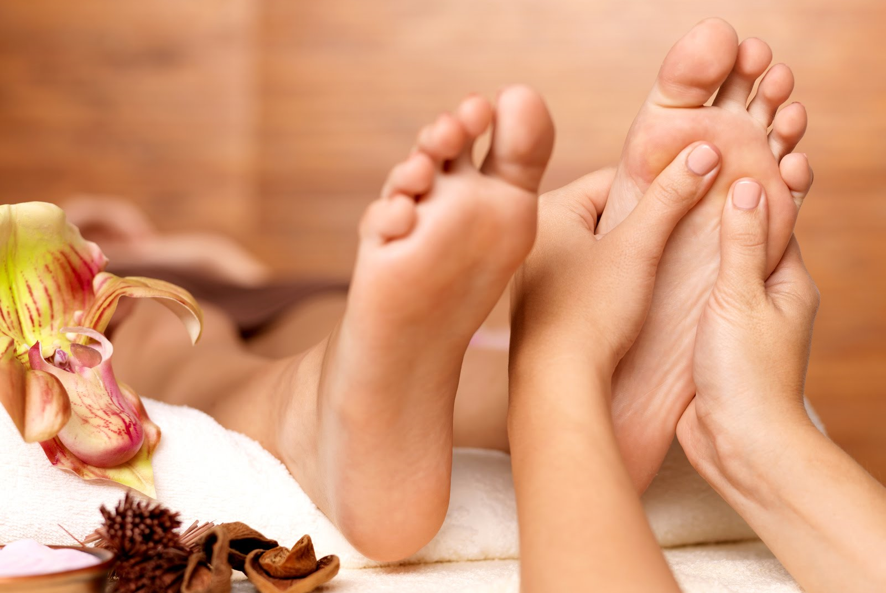
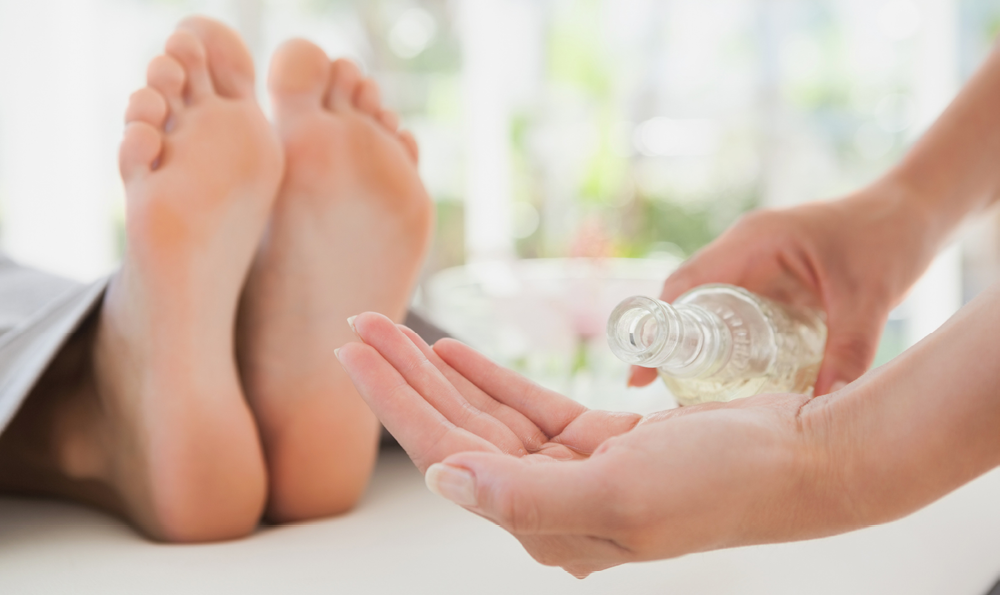
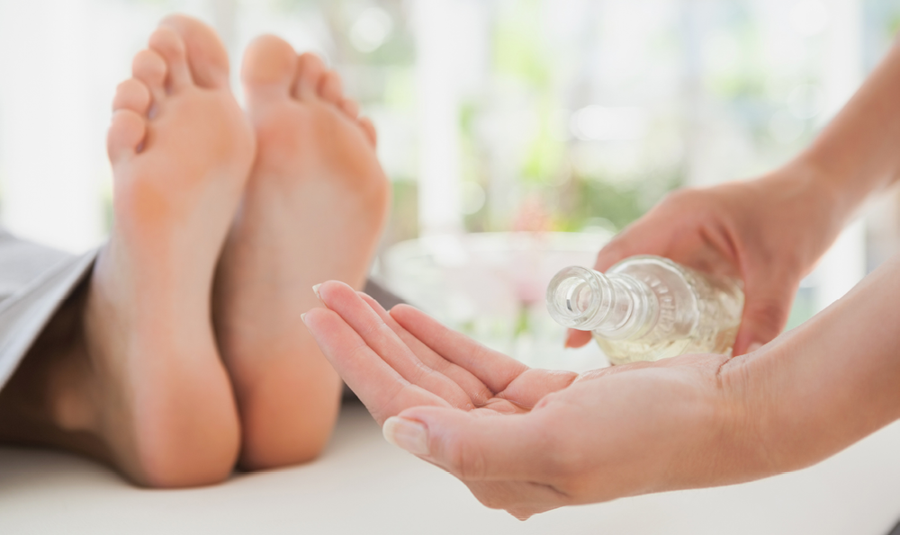

Refleksoterapia pomaga w:
- Obniżaniu stresu i napięcia nerwowego
- Poprawia krążenie krwi i wspomaga odblokowanie impulsów nerwowych
- Naturalnym przywracaniu równowagi organizmu
- Spokojnym śnie
- Likwidowaniu migrenowych bólów głowy, nerwobóli, bóli reumatycznych
i mięśniowych - Wzmocnieniu systemu immunologicznego
- Chorobach układu oddechowego: zapaleniu zatok, oskrzeli, gardła, itp.
- Alergiach
- Regulacji cyklu menstruacyjnego, zaburzeń w okresie menopauzy
- Zwiększeniu płodności
- Usunięciu stanów zapalnych gruczołu prostaty
- Usunięciu stanów zapalnych pęcherza moczowego i nerek
- Walce z bólami kręgosłupa, rwy kulszowej
- Regulacji pracy układu trawiennego
- Wspomaganiu pracy serca
- Uregulowaniu ciśnienia tętniczego
- Rehabilitacji po przebytym udarze mózgu
- Regeneracji tkanek po przebytym zabiegu chirurgicznym
- Regeneracji organizmu po wzmożonym wysiłku.
- Pracy nad likwidacją haluksów bez ingerencji chirurgicznej
- Wspomaganiu organizmu w walce z nowotworem oraz skutkami chemio
i radioterapii



Zabiegi refleksologiczne oddziałują na wszystkich niezależnie od wieku - począwszy od wczesnego dzieciństwa a skończywszy na dorosłości.